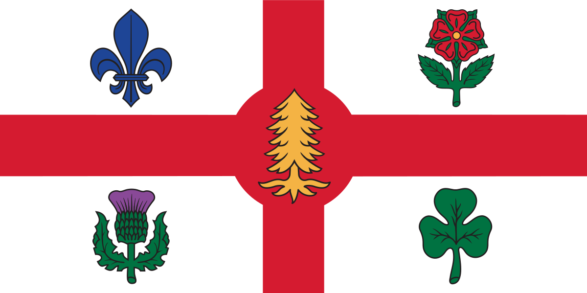

This was created November 21st, 1921. Originally, the coat of arms was used as an identification for Canada. Back then, pictures were more easy to interpret and identify by people instead of words. The action of creating symbols to represent words is called heraldry. Many countries used the popular art form of Heraldry, and in Canada’s case, many of the symbols in the Coat of Arms have influenced the designs of Canadian flags. This is why the imagery, especially imagery that has national representation, has deeper significance, and is easily interpretable. The shield in the center has the royal symbols of England, France, Scotland, and Ireland. Currently, the Coat of Arms design is being used as a notice of possession owned by the Canadian government. The motto of the order of Canada is scripted on a ribbon on the center of the arms saying, “Desiderantes Meliorem Patriam” which means “they desire a better country”. The Canadian colors of red and white are inserted around the arms. The lion crest represents the sovereignty of Canada and the lion symbolizes courage and valour. The flags represent Canada’s founding nations which are France and England, and this is also why these countries' royal symbols are in the center of the arms. The Canadian Monarchy is depicted in the flowers at the bottom, which are the English rose, the Fleur-de-lis, Scottish thistle, and the Irish shamrock. The imperial crown at the top dictates the head of Canada is a monarch.
